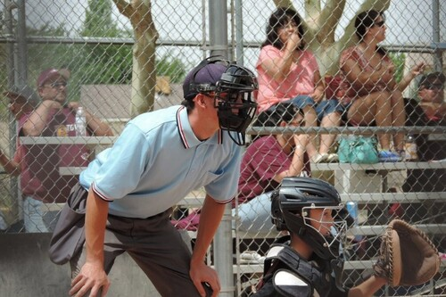
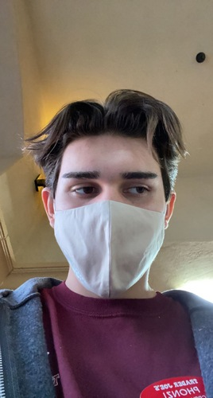
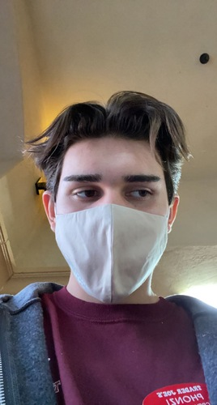

Alphonzo Mancinas
From a young age, I was taught to be respectful to others and work hard at whatever I do. Ever since I was 4 years old, my parents gave me the opportunity to play baseball and fulfill my dream of one day becoming a Major League Baseball player. Although I know the possibility of that dream coming true isn't too high, I will forever be gratefull for all that I have learned no matter what. I grew up in Redlands,CA with my sister and two parents where I attended Crafton elementary, Clement middle, and Redlands East Valley high school.From middle school to high school, I was enrolled in many honors/AP courses where I excelled to create as many scholar opportunities as possible. Following high school, I attended Riverside City College to continue my education and baseball career with hopes to attend a D1 after. Due to Covid, I was shortned two years of playing but still managed to obtain an A.A. in Social Sciences and Kinesiology.
In the midst of Covid, I had some free time on my hands that allowed me to work at my first real job. I applied and got accepted into Trader Joe's in June of 2020 where I started off working 40 hours a week. Although it was a big change for me, I felt like I was very well prepared due to all my experience playing/working in the baseball world. I learned time management, responsibility, and committment at a young age which I transferred directly into the work force and it helped me tremendously to be a good employee and co-worker.
Now that I am at UCR doing school and sports full time, I am unable to work at Trader Joe's. For extra money, I teach younger kids the basics of hitting through some things I have learned throughout the years. Even though I am not working for a company, I still work hard and stay committed to getting better at something every day.
Experience
Hitting Instructor
• Taught kids hitting fundamentals
• Developed responsibility working with set schedules
• Working with clientele
Cashier
• Ringing up customers
• Stocking items
• Being a great customer service representative
Little League Umpire
• Umpired games for kids ages 4-10
• Attended meetings to learn basics
• Worked over 50 games
Education
Riverside City College
Portfolio



